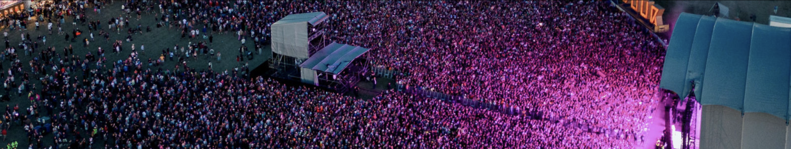
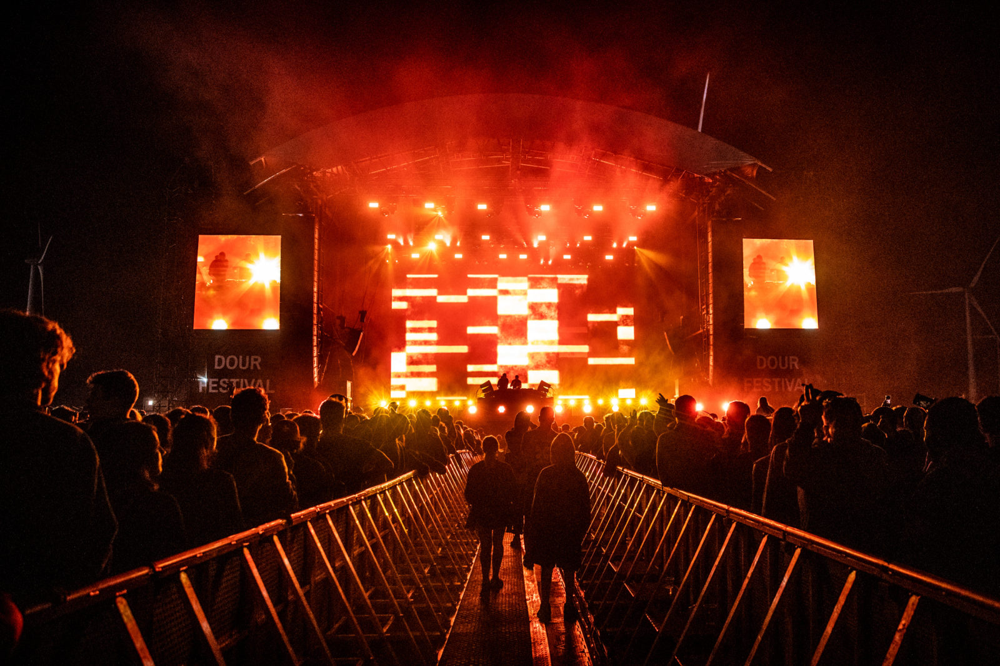
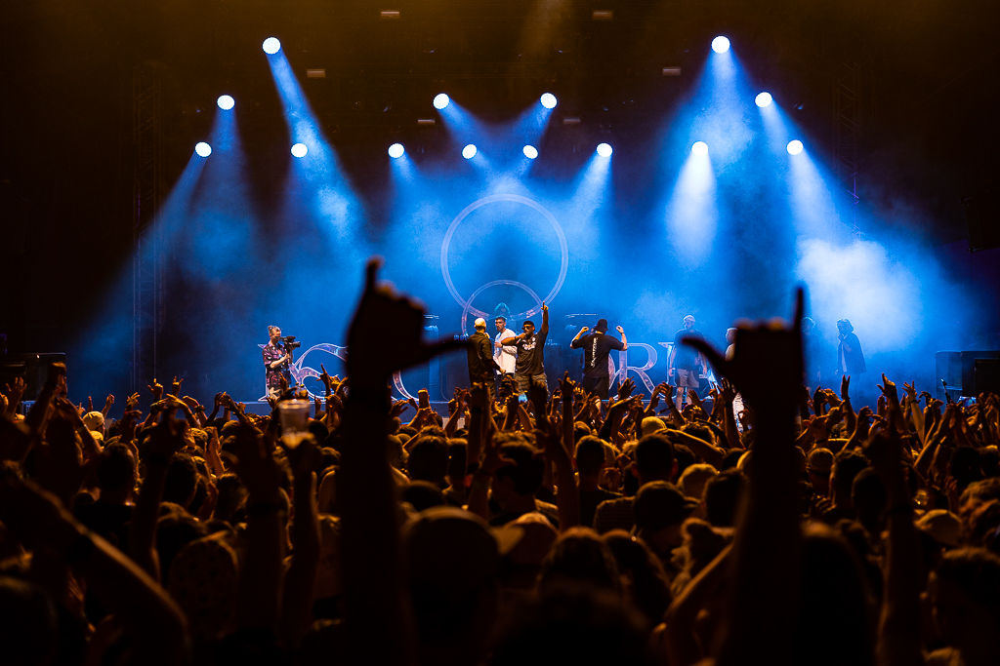
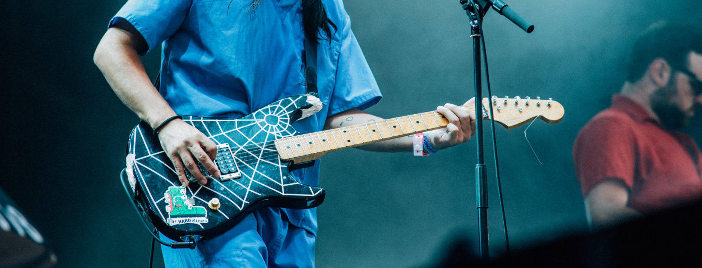

TICKETS ARE AVAILABLE !!! ▶ TICKETS ARE AVAILABLE !!! ▶ TICKETS ARE AVAILABLE !!! ▶
TICKETS ARE AVAILABLE !!! ▶ TICKETS ARE AVAILABLE !!! ▶ TICKETS ARE AVAILABLE !!! ▶ TICKETS ARE
AVAILABLE !!! ▶ TICKETS ARE AVAILABLE !!! ▶ TICKETS ARE AVAILABLE !!! ▶ TICKETS ARE AVAILABLE !!! ▶
TICKETS ARE AVAILABLE !!! ▶ TICKETS ARE AVAILABLE !!! ▶ TICKETS ARE AVAILABLE !!! ▶ TICKETS ARE
AVAILABLE !!! ▶

Podia
THE LAST ARENA
CAP.: 20 000 A FESTIVE REGGAE CONCERT, A HUGE HIP HOP-ARTIST, ROCK GUITARS OR ELECTRONIC MACHINERY: THIS
IS THE MAIN STAGE OF THE FESTIVAL, WHERE EVERYONE GATHERS AND SINGS ALONG WITH THE ANTHEMS OF THEIR
FAVOURITE BANDS. SEEN ON...

DE BALZAAL
CAP.: 15 000 KNOWN AS THE FESTIVAL DANCE FLOOR WHERE ONLY DJ’S PLAY NON STOP FROM 3PM TO 3AM, ALL ELECTRONIC STYLES ARE IN THE HANDS OF THE BEST MASTER OF THE TURNTABLES. EVERY YEAR DE BALZAAL IS REDESIGNED LIKE A...
BOOMBOX
CAP.: 9 000 IN THE DAYTIME IT IS THE BROOKLYN OR COMPTON OF THE FESTIVAL. THE BEST HIP HOP, SOUL, RNB AND SWING ARTISTS FROM ALL OVER THE WORLD PLAY THE MIC EVERY DAY. THE FLOW AT THE BOOMBOX IS INEVITABLE. AT NIGHT,...

LA PETITE MAISON DANS LA PRAIRIEL
CAP.: 8 500 THE PERFECT PLACE FOR INDIE MUSIC-FANS WHERE YOU MOVE FROM NEW DISCOVERIES NEXT TO WELL-KNOWN BANDS. AT NIGHT, THIS PETITE MAISON BECOMES THE EPICENTRE OF NEW STYLES, INNOVATING SOUNDS AND TOMORROW’S NEXT BEST BAND. SEEN ON THIS STAGE:...
LE LABO
CAP.: 3000 INAUGURATED IN 2015; MORE INTIMATE AND AVANT-GARDE – THE LABO IS OUR OWN LITTLE LABORATORY. HERE, WE EXPERIMENT WITH NEW IDEAS, WE ANALYSE SONIC DEVIANCE AND TRY OUT THE NEWEST TRENDS. ONE DAY 100% ROCK MUSIC, THE NEXT...
LE GARAGE
CAP.: 1 000 THE GARAGE IS THE NEW LITTLE SANCTUARY DEDICATED TO GUITARS. WANT TO HEADBANG, MOSH, LISTEN TO ROCK, METAL, GARAGE OR PUNK? THE GARAGE IS FOR YOU. LIFT THE METAL DOOR, WE PLUG IN OVERDRIVES AND FLANGERS.
SEEN ON THIS STAGE: PUNISH YOURSELF, TAGADA JONES, STUFFED FOXES, THE CLOCKWORKS, LAMBRINI GIRLS,…

DUB CORNER
CAP.: 2000 THE DUB CORNER IS THE MEETING AREA FOR DUBPLATE LOVERS. IMPORTED FROM JAMAICA, TRANSFORMED IN GREAT BRITAIN, DUB CULTURE IS REIGNING AT OUR DUB CORNER. JAH JAH! SEEN ON THIS STAGE: ABA SHANTI-I, ALPHA STEPPA, CHANNEL ONE, DUB...
ROCKAMADOUR
THE ROCKAMADOUR STAGE, A SMALL OASIS HIDDEN AT THE HEART OF THE FESTIVAL, IS BACK.. IN THIS INTIMATE LOCATION, CAMOUFLAGED BY SEA CONTAINERS, YOU WILL FIND THE BEST LOCAL AND UPCOMING ARTISTS. SEEN ON THIS STAGE: NU GENEA, BADBADNOTGOOD,...